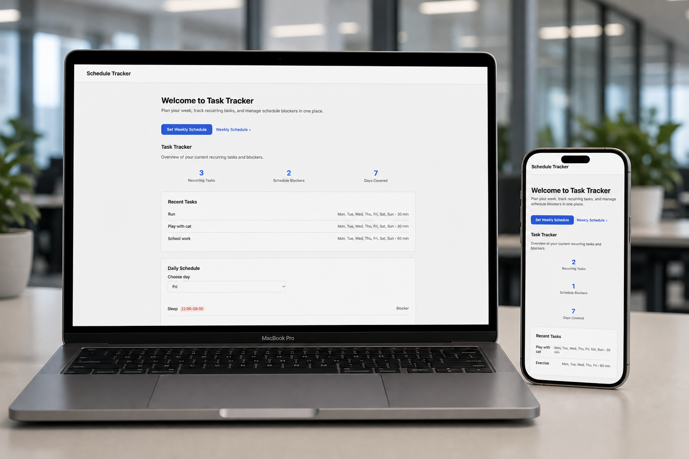
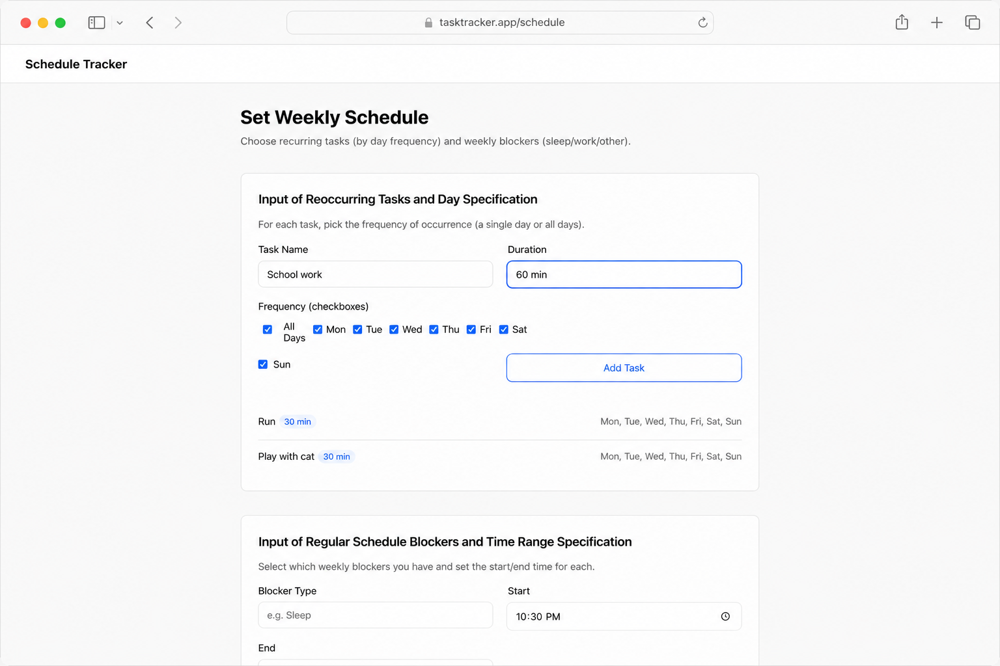
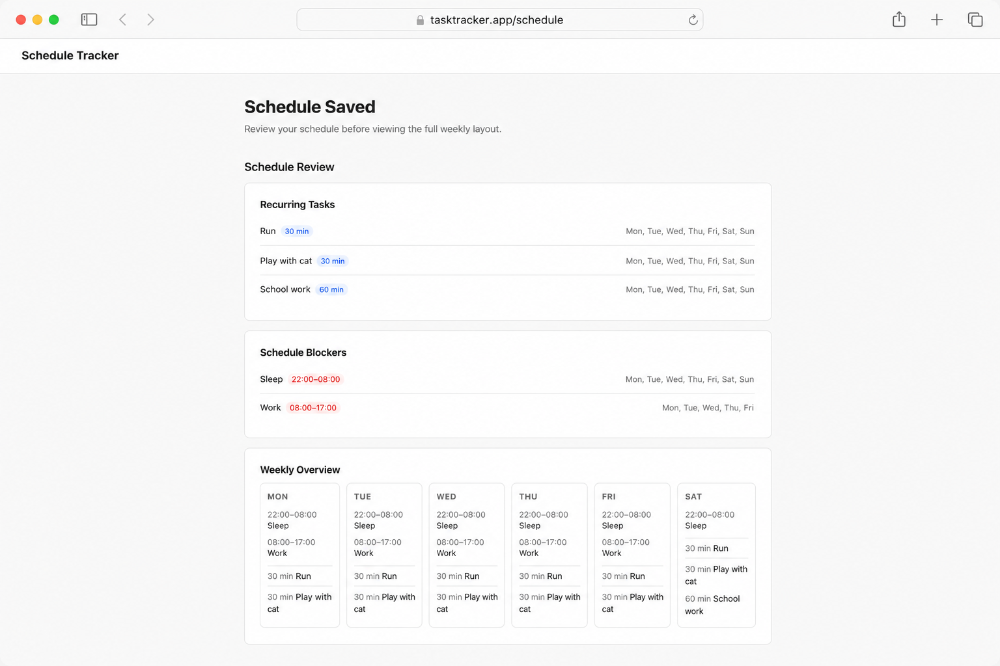
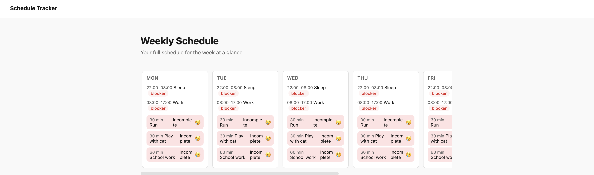
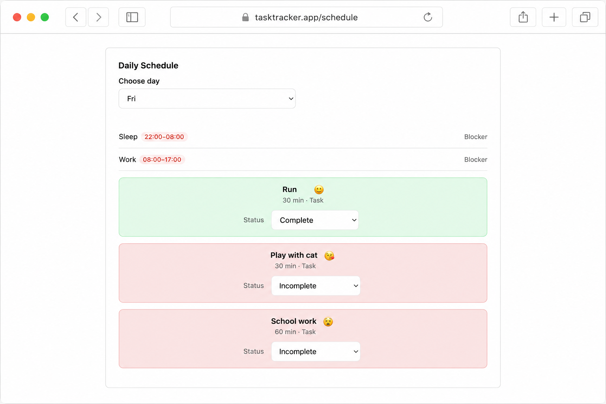

Productivity tool
Task
Tracker
A focused task management app for capturing, organizing, and completing daily work with a calm, distraction-free interface.
View live app
Project details
At a glance
Context
Overview
TaskTracker is a lightweight productivity app built for people who want to stay on top of daily work without the noise of heavyweight project tools. The interface prioritizes clarity, tasks are easy to add, sort, and complete so attention stays on what matters.
Challenge
The challenge
Most task apps overwhelm users with boards, tags, integrations, and settings before a single item gets done. I needed a tool that felt simple and easy from the first interaction: fast capture, obvious status, and a layout that doesn't compete with the work itself.
Response
The solution
TaskTracker strips the experience down to essentials — a clean list, clear completion states, and persistent storage in the browser. The design system brings generous whitespace, editorial typography, and subtle motion so the app feels intentional and easy to use.
How it was built
Process
- Mapped out key user flows
- Prompted related user flows and site structure using Cursor
- Iterated appropriately, published, and hosted on Netlify
Vibe coding
Working with AI
In order to get the web app efficiently stood up it was helpful to define out the site structure, page elements, and user flows in advance. From there, it could be leveraged to help facilitate the prompting and iteration process.
Main screens
User journey




Highlights
Key features
- Quick-add task input
- Mark complete within the main view
- Track tasks progress throughout the week
- Reference a count of tasks completed a day and over a week
- Calm, distraction-free layout with clear visual hierarchy
- Responsive design that works on desktop and mobile
Results
Outcomes
The result is a working task manager that feels polished despite a simple feature set.
Looking ahead
Reflection
Next I'd explore account and a mobile app version. Account creation is key for storing and referencing data in multiple settings. While, a mobile app is essential for viewing tasks on the go.